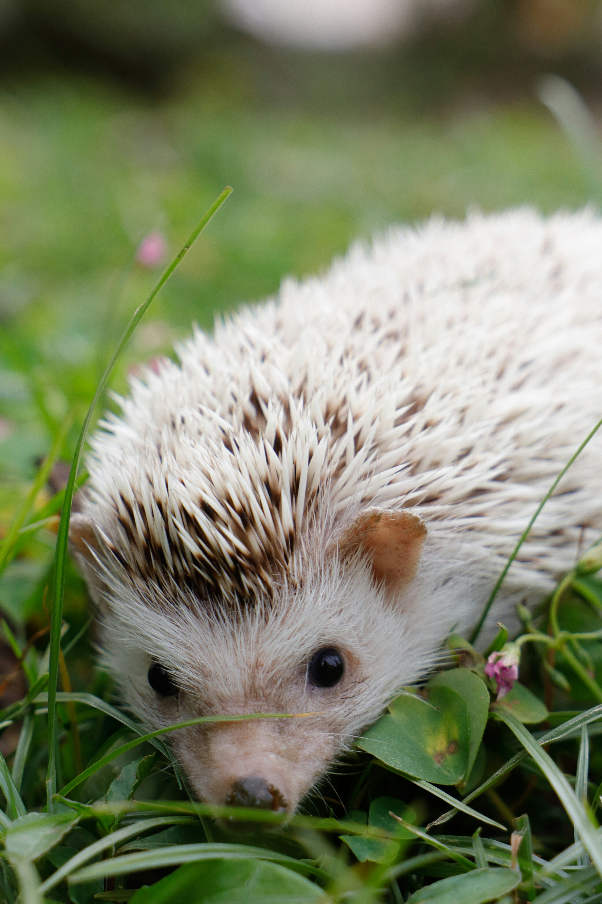
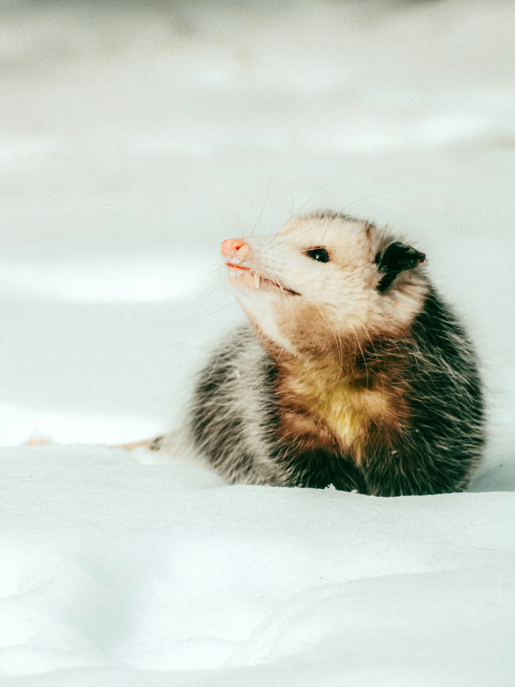
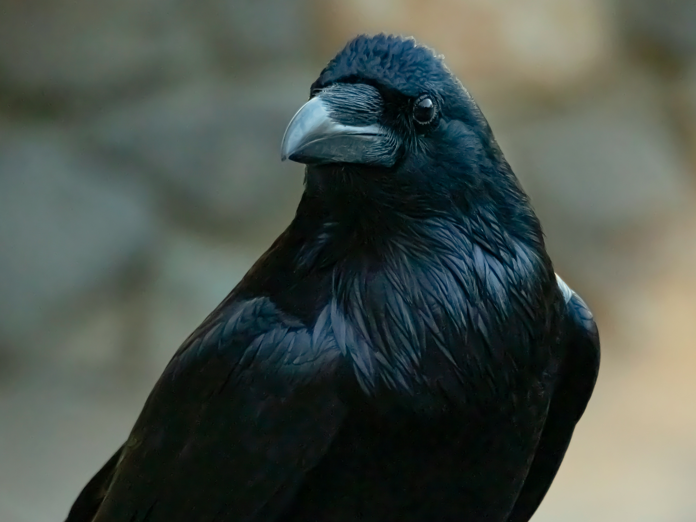
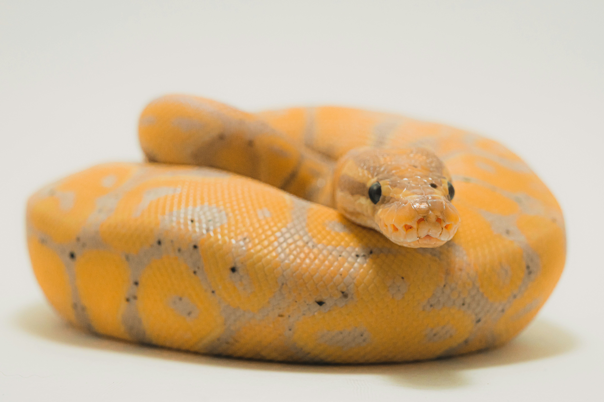

Mis Mascotas
Estas son mis mascotas

Agapita
Agapita es una eriza de tierra que llegó a mi vida hace 3 años. Es una mascota muy especial, con su pequeño tamaño y su apariencia adorable, siempre logra robarme una sonrisa. A pesar de su apariencia tierna, Agapita es bastante activa y curiosa, explorando su entorno con entusiasmo. Me encanta pasar tiempo con ella, observando sus movimientos y cuidando de sus necesidades.

Ernesto
Ernesto es un zarigüeya que rescaté hace un año. A pesar de su apariencia un poco inusual, Ernesto es una mascota muy cariñosa y juguetona. Le encanta trepar y explorar su entorno, siempre buscando nuevas aventuras. Es increíble cómo ha logrado adaptarse a la vida en casa y se ha convertido en un miembro querido de mi familia.

Sylus
Sylus es un cuervo que encontré herido hace dos años. D Sylus es increíblemente inteligente y tiene una personalidad única. A menudo me sorprende con su capacidad para aprender trucos y su habilidad para comunicarse conmigo. Es un compañero leal y siempre está dispuesto a pasar tiempo juntos.

Rosita
Rosita es una serpiente que adopté hace seis meses. A pesar de su apariencia intimidante, Rosita es una mascota muy tranquila y fácil de cuidar. Me encanta observar su comportamiento y aprender sobre su naturaleza. Es fascinante cómo se mueve y se adapta a su entorno, y me siento afortunada de tenerla como parte de mi vida.